About AMSC
A faith-driven community helping Muslim students at the Air Force Institute of Technology grow in deen, character and academic excellence.
Who we are
The AFIT Muslim Students’ Community is a faith-driven body dedicated to fostering spiritual growth, unity and purpose among Muslim students at the Air Force Institute of Technology.
Rooted in Islamic values and guided by sincerity, discipline, faith and brotherhood, the community provides a space for students to grow in deen and character through worship, service, learning and positive impact on campus.
AMSC is more than a religious group. We run the Islamiyya classes and the Qur’an circles, and we also run weekend tutorials, digital skills training and a welfare network, so that no Muslim student at AFIT has to work out student life alone.
Membership is open to every Muslim student of the Institute, whatever their department, level, state of origin or school of thought.
At a glance
Our purpose
To help Muslim students at AFIT hold on to their deen while they excel in their studies: by teaching what they need to know, supporting them when things are hard, and building a brotherhood and sisterhood that lasts beyond graduation.
Where we are going
A community strong enough not to depend on any single set of students: established programmes, honest accounts, a real library, a working welfare fund, and an alumni network that carries the next generation.
Our values
Seven values guide how we work: a balance of faith, academic excellence, community and the discipline AFIT is known for.
Faith
Worship and sincerity come first, in every programme we run.
Unity
One community across departments, levels and backgrounds.
Discipline
Punctual, organised and dependable, as AFIT expects of us.
Excellence
Doing every task well, from a tutorial to a Qur’an competition.
Service
Looking after one another and leaving the campus better.
Growth
Steady progress in deen, character and skill.
Academics
Good grades are part of the trust placed in a student.

What our logo means
Every part of the AMSC mark carries a meaning.
Three figures
Community, diversity and togetherness: unity among Muslim students.
Wheat
Growth and barakah (blessing), spiritual nourishment, development and flourishing.
Wings
AFIT’s military foundation and the Air Force: ambition, progress and elevation.
Mosque arch
The mihrab, a sacred Islamic space: prayer, spiritual direction and the Qiblah.
How we work
Four commitments we hold ourselves to.
Open to all
No faction and no gatekeeping. Differences of madhhab are handled with adab, and nobody is turned away.
Accountable
Dues and donations are recorded and reported to members, with two signatures on every disbursement.
Academically serious
A student who fails out cannot serve anyone. Tutorials and the past question bank are core work, not extras.
Quietly helpful
Welfare is confidential by design. Nobody’s need becomes public information.
Leadership and committees
The Executive Committee leads AMSC for one session. Committees of volunteers do most of the work, and every one of them welcomes new hands.
Da’wah
Islamiyya, reminders, lectures, Da’wah Week and the anonymous question-and-answer sessions.
Academics
Schedules tutorials, recruits tutors and maintains the past question bank.
Welfare
Helps new students settle in, visits members who are unwell and keeps in touch with students across the session.
Media and public relations
Design, photography, video, announcements, the social channels and this website.
Organising
Venues, set-up, registration and logistics for every programme and event.
Sisters’ committee
The Sisters Circle, Ta’alim, sisters’ welfare and the sisters’ side of every major event.
Serve where you are useful
Tell us what you can do: teach, tutor, design, film, organise or code. We will find you a place.